The One They Pierced
A Roman soldier drove a spear into a dead man's side to be sure He was gone. He had no idea he was finishing a sentence God wrote five centuries earlier.

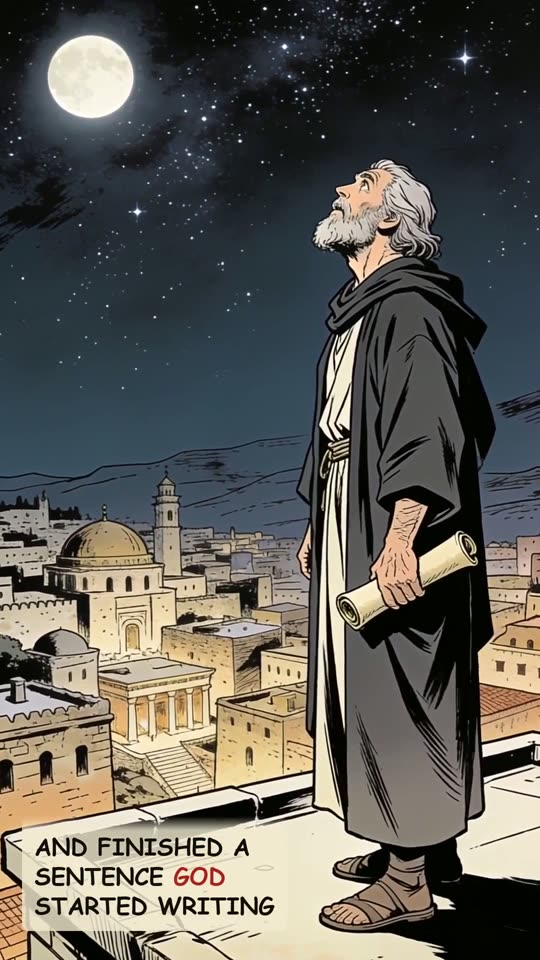
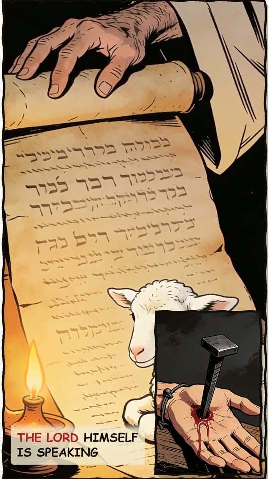
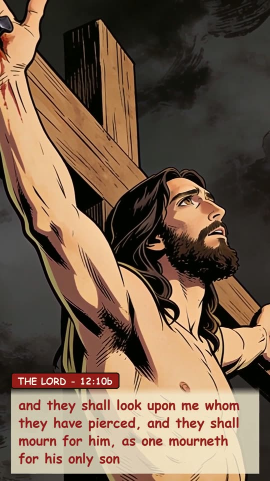
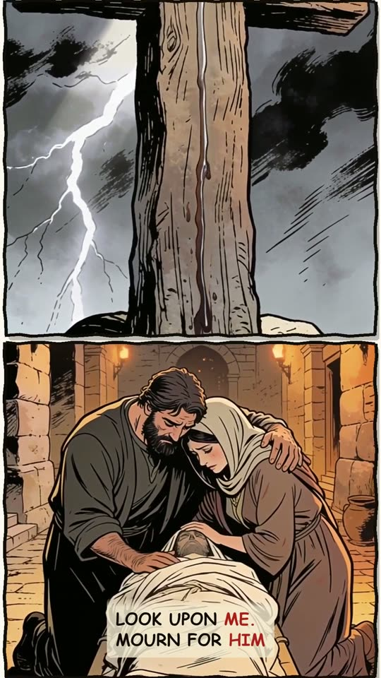
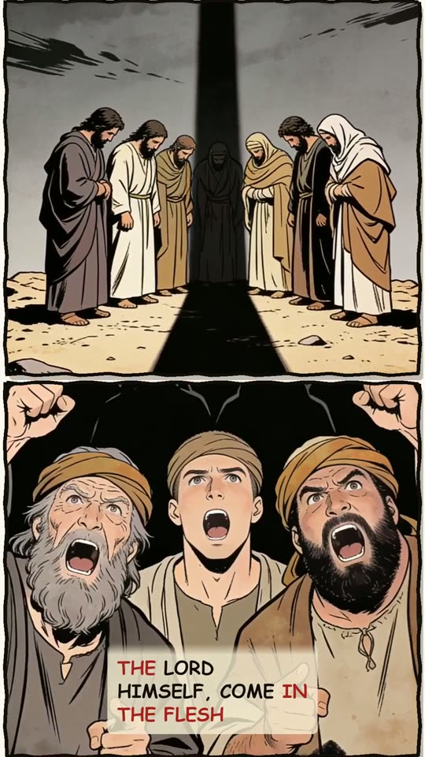
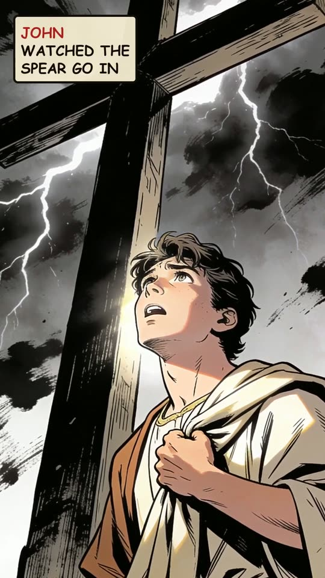
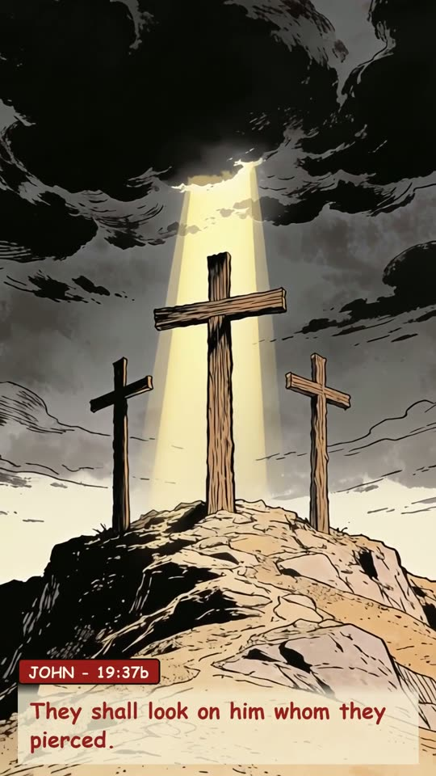
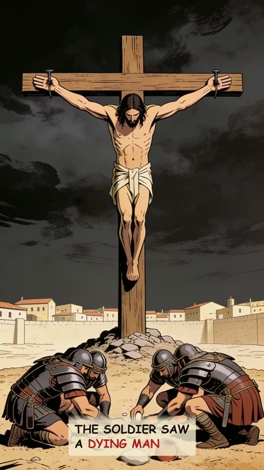
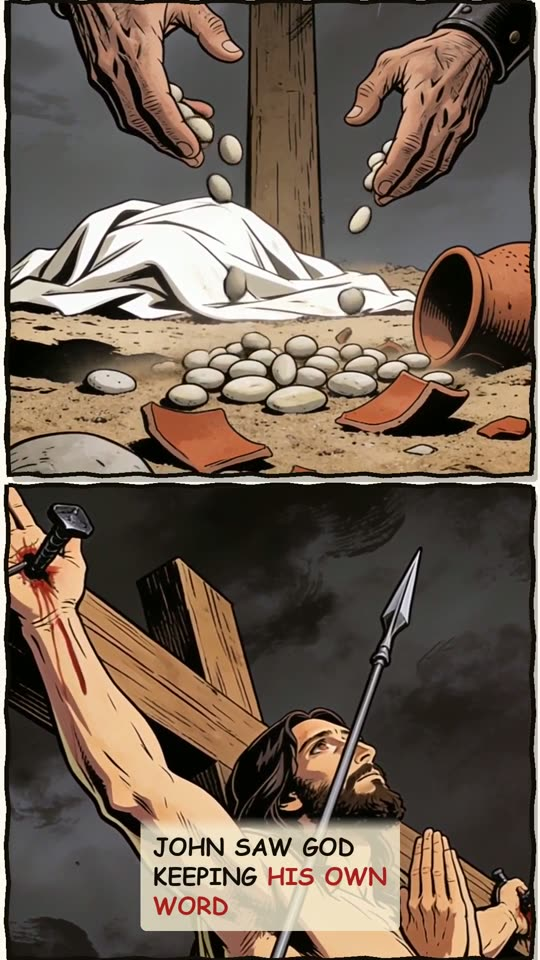
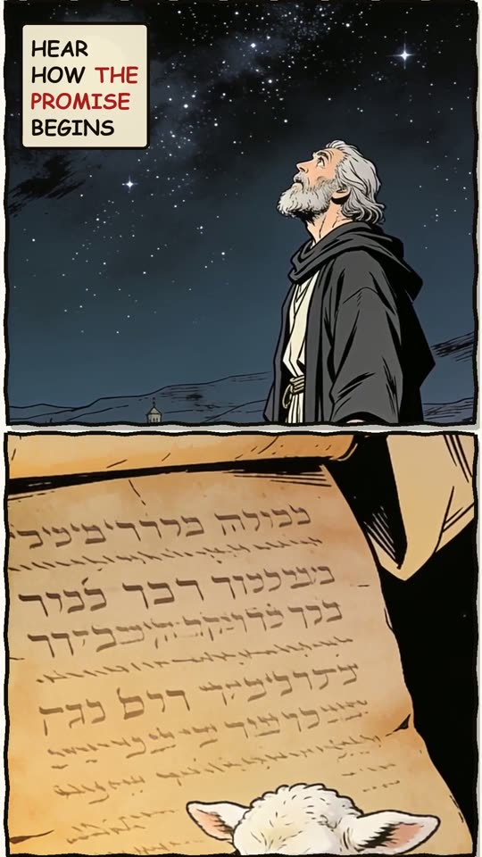
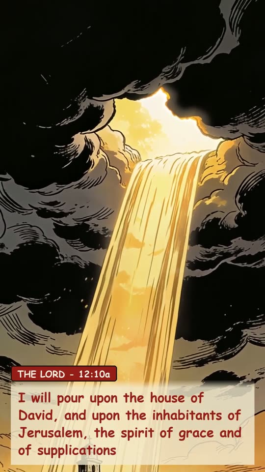
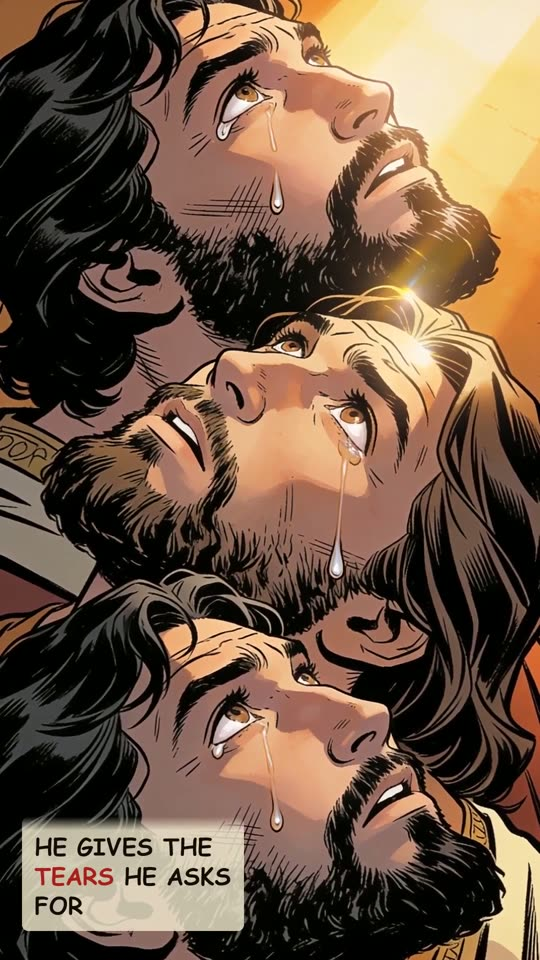
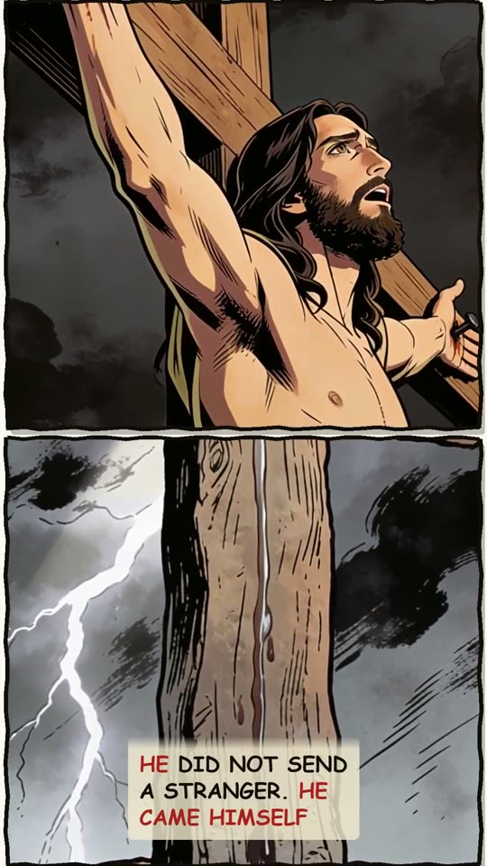
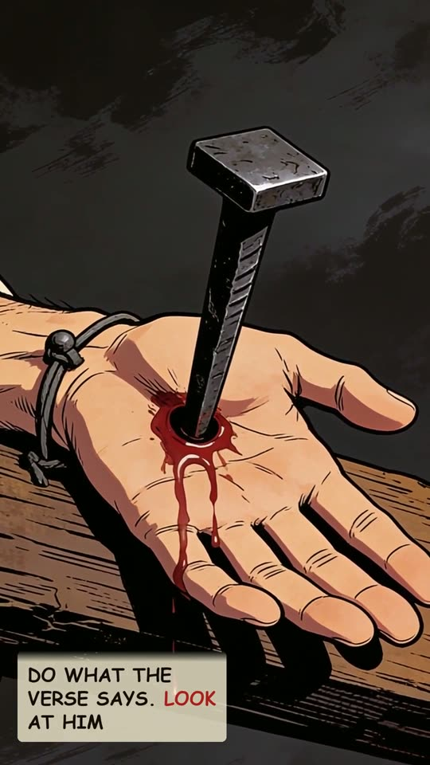
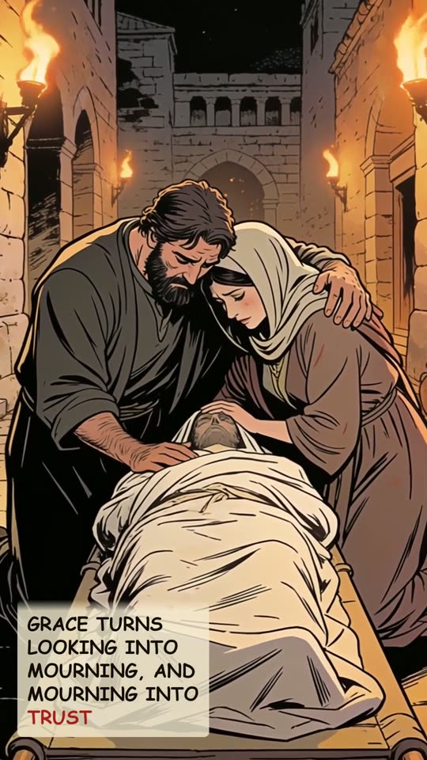
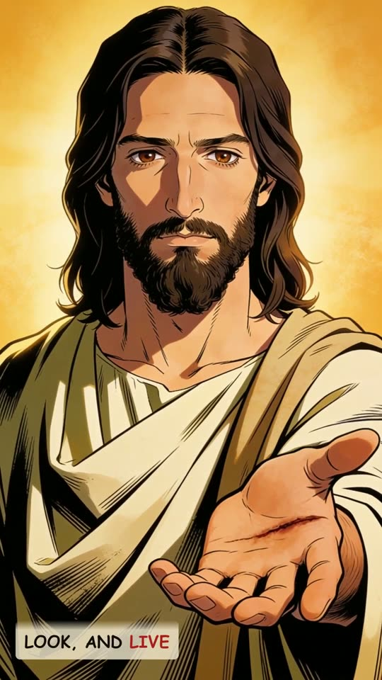
The narration
A Roman soldier raised his spear on a Friday afternoon, and finished a sentence God had started writing over five hundred years earlier. In Zechariah twelve, the LORD himself is speaking. And he claims the wound as his own. and they shall look upon me whom they have pierced, and they shall mourn for him, as one mourneth for his only son Look upon ME. Mourn for HIM. The pierced one is the LORD himself, come in the flesh. John watched the spear go in. And he reached for that old sentence: They shall look on him whom they pierced. The soldier saw a dying man. John saw God keeping his own word. And hear how the promise begins. I will pour. Not wrath. The spirit of grace and of supplications. He gives the tears he asks for. God did not send a stranger. He came himself. So do what the verse says. Look at him. Let the grace he pours turn looking into mourning, and mourning into trust. Look, and live.